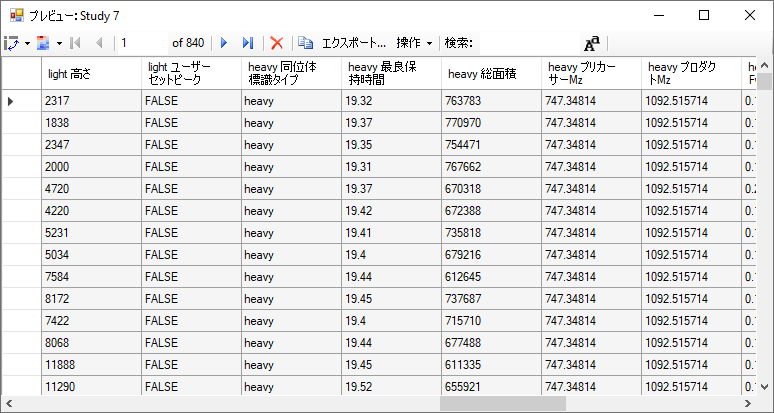
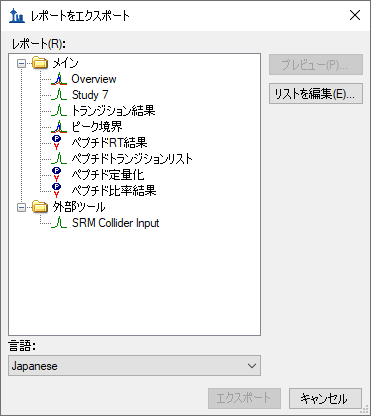
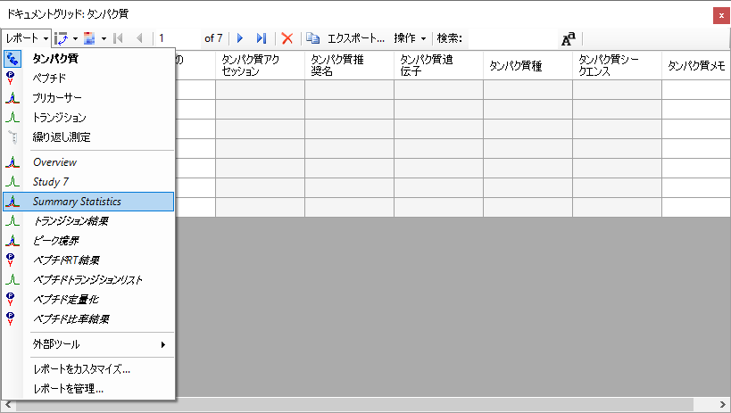
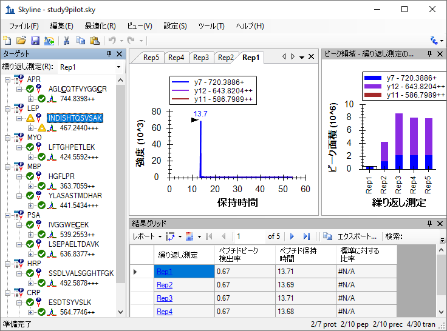
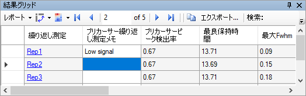
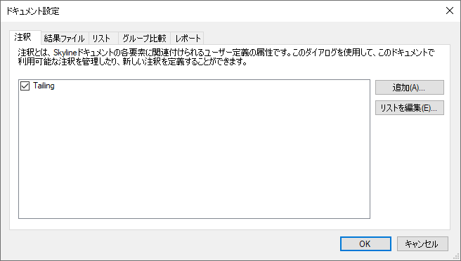
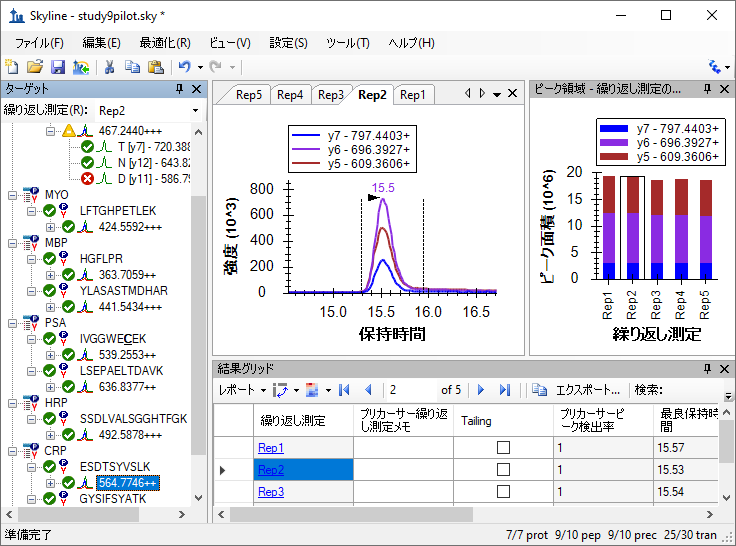

The Skyline Targeted Proteomics Environment provides informative visual displays of the raw mass spectrometer data you import into your Skyline documents. It allows you to work with this data, to refine the peptides and transitions you are measuring and to tune integration boundaries. A rich variety of calculated values and statistics may be exported from your Skyline document to a tabular comma separated value (CSV) file perfect for further analysis in tools like Excel and R. The Skyline Results and Document Grids provide access to many of these values and allow you to edit custom annotations and native properties as you work with your data.
The first part of this tutorial will focus on Skyline custom reports. You will learn how they can be designed, shared and used to export raw values and summary statistics from your Skyline documents. Exported reports can be used in the following ways:
In developing Skyline we aim to create a vendor-neutral platform for targeted mass spectrometry investigation. Skyline can export similar custom reports for documents populated with the data from Agilent, Bruker, SCIEX, Shimadzu, Thermo-Scientific and Waters instruments. The ability to create consistent reports across instrument platforms greatly facilitates cross-instrument comparisons and large multi-site studies.
Understanding how to create custom reports, tailored to your own experiments, is critical and described in detail in this Skyline custom reports tutorial.
The second part of this tutorial will focus on the Results and Document Grid views in Skyline, which provide real-time access to many of the data fields available in the custom reports. You will learn to customize columns in the Results and Document Grids for immediate access to important values, as you inspect and refine your mass spectrometer output in Skyline. You will also learn to work with custom annotations to provide a controlled vocabulary for further interpretation of and human interaction with your results, which can also be exported in custom reports.
To start this tutorial, download the following ZIP file:
https://skyline.gs.washington.edu/tutorials/CustomReports.zip
Extract the files in it to a folder on your computer, like:
C:\Users\brendanx\Documents
This will create a new folder:
C:\Users\brendanx\Documents\CustomReports
Now open the Study7_example.sky file in this new folder by double-clicking, or by using Open on the File menu in a running instance of Skyline.
The dataset in Study7_example.sky is a subset of a study that was performed by the Clinical Proteomics Technology Assessment for Cancer (CPTAC) consortium (T. Addona et al “Multi-site assessment of the precision and reproducibility of multiple reaction monitoring–based measurements of proteins in plasma”, Nature Biotechnology, 2009, 27, 633 - 641). This particular study describes a calibration curve at different concentrations of analyte peptides and a constant spike in level of their corresponding isotope labeled internal standards.
The Skyline file displays data from a subset of CPTAC Study 7.2 data (in the paper referred to as “Study II”) acquired at one CPTAC site. The Skyline file shows data for 10 different peptide sequences monitored by LC-MRM-MS with concentrations for the analyte proteins (see light peptides) ranging from concentrations at 500 fmol to 2.92 fmol (replicates J: 500 fmol; I: 275 fmol; H: 151 fmol; G: 83 fmol; F: 46 fmol; E: 25 fmol; and D: 8.55 fmol – lower concentration points although acquired are not included in this tutorial). Heavy internal standard (IS) peptides are each spiked in at a concentration of 50 fmol.
To get a first impression of what this dataset looks like perform the following steps:
A new window appears that shows a bar graph of peak area for each replicate. The blue bars represent the heavy labeled version of this peptide (always spiked in at 50 fmol), and the red bars represent the light analyte at varying concentrations (each concentration point was acquired in technical quadruplicate).
Other tutorials describe how you can view and edit documents like this one. For the purposes of this tutorial, however, the Study7_example.sky document has received an initial integration review, fully preparing if for reports to be exported and used in deeper statistical analysis. Before continuing with the rest of the tutorial:
To create your first Skyline custom report template, perform the following steps:
An Export Report form will appear that will probably list at least the Skyline default report templates shown below:
Continue creating a new Skyline custom report template by performing the following steps:
The form should now look like this:

The form should now look like this:

Note that the fields in the Edit Report form, shown above, have a distinct hierarchical structure. At the highest level are the protein specific fields which are shown at the bottom of the left box (Protein Name, Protein Description, Protein Sequence, Protein Note), and the expanded Replicates group below these that contains the general field Replicate Name among others. Skyline custom reports also provide peptide specific fields, contained in the expanded Peptides group at the top of the left box, such as Peptide Sequence and Average Measured Retention Time among others. The peptide specific fields include a Peptide Results group, which is not expanded yet. Also unexpanded is the Precursors group, which contains precursor specific fields, a Precursors Results group, and finally a Transitions field group. The Transitions group, in turn, contains the transition specific fields and a corresponding Transition Results group, containing the most detailed results values, such as Retention Time, Fwhm, Start Time, End Time, Area and Background, from which many of the higher level results field values are derived.
In the Edit Report form continue to add fields to your first custom report template by performing the following steps:
This should leave the Edit Report form looking like:

The Preview form should appear looking like this:

The Preview function is quite helpful when designing report templates. At times it may even serve as a quick substitute for
exporting a report to a file. The copy button ( ) on the toolbar will copy all of the data including the column
headers. You can also select all of the values in the Preview form by clicking the upper-left rectangle to the left of the
column headers. Pressing Ctrl-C, then copies the full report, excluding the column headers. After copying the data using either method, it can
be pasted into another tool, such as Excel.
) on the toolbar will copy all of the data including the column
headers. You can also select all of the values in the Preview form by clicking the upper-left rectangle to the left of the
column headers. Pressing Ctrl-C, then copies the full report, excluding the column headers. After copying the data using either method, it can
be pasted into another tool, such as Excel.
The report preview displayed in part above, for replicates 7_2_D_01, and 7_2_D_02, shows precursor Best Retention Time and Total Area for all 10 peptides in both their light and heavy form across all LC-MRM-MS acquisitions/experiments in the columns to the right. By scrolling to the right, you can see columns for all 28 LC-MRM-MS acquisitions. Maximize the Preview form by clicking on the square in its upper right corner to see more columns. In this example 7_2_D_01, and 7_2_D_02 are taken from samples at the same light analyte concentration. Therefore, Total Area values are expected to be similar. Each letter D through J indicates a different light analyte concentration. Each concentration was acquired in technical quadruplicate, indicated by numbers 01 through 04. The heavy peptide concentrations were held constant at 50 fmol in all samples.
Close the Preview form by clicking the ‘x’ in the upper right corner to return to the Edit Report form again. To save this report template:
You will see the new Overview report template appear in the Report template list, as shown below:

The new Overview report template is now added to the Skyline report template list. The Export Report form should now look like:

From the Export Report form you could now export your new report by selecting ‘Overview’ in the Report list and clicking the Export button. For now, dismissing the form, in order to start the process from the original Skyline document view.
To export the report you created and previewed above to a CSV file, do the following:
If you switch to a Windows File Explorer window, showing the CustomReports folder you created for this tutorial, you will see the Overview_Study7_example.csv file you just created. Open it now with Excel and confirm that its contents are quite similar to the preview you displayed earlier. Note that the file contains the column header names, which you cannot get by simply copying and pasting from the Preview form.
Report templates in Skyline are very flexible, easy to manage and modify, and share with collaborators.
There are many reasons you might want to share a custom report template, whether you are participating in a large multi-laboratory study or working with a single collaborator, whether you are providing the proteomics community with your own custom tool that depends on particular fields from Skyline documents or providing supplementary information with a manuscript to allow others to repeat your protocols. The Skyline support for instruments from multiple vendors means your shared report templates can be used to gather data from multiple sites with different instrumentation.
To share the Skyline report template you created in this tutorial, perform the following steps:
Skyline will present the Manage Reports form, as shown below:

The report template is saved to the file “Overview.skyr” in the CustomReports folder created for this tutorial. You could now share it with your collaborators, with your own analysis tool or as supplementary data for a manuscript.
To gain an understanding of how others would use the custom report template you have shared, you need to first delete it from your system. Then you can add it back using the shared report file “Overview.skyr” that you created in the previous section, as if you had acquired this shared template from someone else.
The Export Report form should still be open after the steps performed in the previous section. To delete the ‘Overview’ report template from your Skyline settings, do the following:
The Manage Reports form should now look like this:

To remove the ‘Overview’ item from the list, do the following:
The Export Report form should now look like this:
Just as when you first brought it up in this tutorial.
To demonstrate how your collaborators would import a new report template into Skyline follow the steps below:
These actions should add an ‘Overview’ item back to the Report list in the Export Report form. To verify that this is indeed the report you saved, perform the following steps:
Skyline will present a Preview form containing the same values you saw earlier in this tutorial.
You can, of course, create much more data rich reports than the simple ‘Overview’ report. You can do this by creating another new report template, by editing your existing ‘Overview’ report, or, as shown below, by making a copy of the ‘Overview’ report and editing the copy. To create a new, more complex report from a copy of the ‘Overview’ report template, perform the following steps:
Skyline will present the Edit Report form with the fields from the ‘Overview’ report template already added, as shown below:
The report name for this new report template has not yet been assigned. To assign it now:
Continue to add more fields as described below by clicking the checkbox next to each field to add it to the column list for your report template, on the right side of the Edit Report form:
The report template should now contain a lot more detail than the original ‘Overview’ report template, and the Edit Report form should look like this:

To reorder some fields in this new report template, do the following:
You can achieve whatever ordering suits you best, in this way, using the up and down arrow buttons on the far right, and you can remove fields you may have added by mistake with the red ‘X’ button above the arrow buttons, or by unchecking them in the list to the left. This tutorial, however, will continue without making any further changes to the column list.
To preview the values for the current document in the report template you have created, do the following:
With data like this, where each peptide has both a light analyte and a matching heavy isotope labeled internal standard, it may be more convenient to work with the data for these paired precursors all in a single row to allow you to compare matching transition values more easily.
To make this change to the ‘Study 7’ report template, do the following:
All of the values for matching light and heavy transitions have been added to the same row. New columns have been added to achieve this, and columns specific to an isotope label type have been given the prefixes ‘light’ and ‘heavy’.
The Preview form is shown below, scrolled to show both ‘light’ and ‘heavy’ column names:

You might notice that the column ‘heavy Isotope Label Type’ shows ‘heavy’ on every row, and that there is also a column ‘light Isotope Label Type’ which shows ‘light’ on every column. When you are pivoting on a column, it does not add much to include it in your column list. Close the Preview form, and do the following to remove the ‘Isotope Label Type’ field from this report:
You can click the Preview button again to verify that both the ‘light Isotope Label Type’ and the ‘heavy Isotope Label Type’ columns have been removed. The next step in this tutorial, however, is to save your work by doing the following:
This will return you to the Export Report form, which should now look like this:

From here, you could now continue to export the new ‘Study 7’ report to a CSV file by selecting it and clicking the Export button, or click Share button to create file for sharing this new report. For this tutorial, however:
So far you have created reports based on the values Skyline offers for each imported replicate of the peptides and transitions specified in a document. Skyline also provides report fields with summary statistics across all imported replicates. These summary fields are particularly suited to quality control by ensuring that replicate QC runs show good reproducibility and coefficients of variation (CV). Skyline report templates can be designed with mean values and CV over all replicates for key parameters, such as peak area, FWHM and retention time.
This tutorial provides a summary report template that you will import into Skyline, but it also describes how to design such a summary report template in the Edit Report form.
To get started, first open a new document by doing the following:
This file contains data acquired by two CPTAC sites over 10 LC-MRM-MS runs, injecting 22 analyte peptides at a constant concentration of 50 fmol over all 5 runs. Such a dataset could potentially be used to assess reproducibility of replicate injections. In this part of the tutorial you will begin working with Live Reports, using the report to navigate around the document. To do this you will use the Document Grid functionality instead of Export Report.
To view the data for key quality control metrics follow the steps below:
A new report named ‘Summary Statistics’ should have been added to the list of reports, and the Manage Reports form should now look like this:


After you choose Summary Statistics, the Document Grid should look like the following:

This report shows that the data in Study9pilot.sky, taken from 5 replicate injections of the same sample, produce peptide CV values for FWHM mostly below 5% and Total Area in most cases under 10% as indicated for the corresponding columns with red boxes. In addition, the column called Range Best Retention Time (red box) lists the RT drift in minutes for any specific peptide over the 5 replicate injections. In this case there is only minimal RT drift (< 0.15 min, < 10 sec).
These summary reports can be used to flag quality control issues early, before they impact data acquired on important samples. In this particular dataset, HPLC and MS seem to behave acceptably. In one case, however, for the peptide INDISHTQSVSAK (from protein LEP), the CV value for Total Area is 59.2% and for FWHM is 23.5% (circled in red), significantly differing from the CV values of all the other peptides.
You can add a filter to this report so that only rows matching specific criteria are shown by doing the following:
The Customize Report form should look like this:

To define a new filter on this report:
The Customize Report form should look like this:
Note that even though the Cv Total Area column is displayed as a percentage in the Document Grid, on the filter tab, the number “20%” is represented as “0.2”.

To inspect the INDISHTQSVSAK peptide more closely, do the following:
The Peak Areas view, showing the total peak area and the contribution of each transition for all 5 replicates, helps clarify the problem that was indicated in the CV values of the summary report preview. For comparison, select several of the other peptides. The Peak Areas view will show much better peak area reproducibility, as indicated by their much lower Cv Total Area values in the summary report preview, where the majority of the peptides had CV values < 10%.

Skyline summary reports can be used with quality control data to flag issues early, while Skyline itself provides powerful visual displays to help get to the root of the problem quickly.
In some cases, you may want to see some of the values presented in reports while you are editing the data, for immediate access to raw values displayed in the Skyline charts. The Skyline Results Grid view provides real-time access to many of the data fields available in the custom reports. In this sections of this tutorial, you will learn to use the Results Grid to gain immediate access to important values and to annotate your data to capture important human insights, as you inspect and refine your mass spectrometer output in Skyline.
To get started using the Results Grid view, do the following:
Skyline should now look something like this:

Now rearrange the windows for better viewing, by doing the following:
This should leave Skyline looking something like:

Skyline keeps its charts and the Results Grid in synch as you navigate the data. If you click on one of the other rows in the Results Grid, Skyline changes the active chromatogram replicate tab. It also changes which bar in the Peak Areas graph has the selection rectangle around it, as well as the selection in the Replicates list at the top of the Targets view.
The other views will update, including the selected row in the Results Grid.
The first column to the right of the Replicate column in the Results Grid is the Precursor Replicate Note. This column allows you to associate a free text note with the PrecursorResults field group for the selected precursor and replicate.
The Results Grid should now look like this:

All of the other columns in the current Results Grid display are calculated by Skyline and cannot be edited, but you can change which columns get displayed and in what order. Several of the columns are scrolled out of view in the image above. To reduce the number of precursor results columns being displayed, do the following:
You can now review the results for other precursors by doing the following:
Finally, expand a precursor and review its transitions. You could apply the same technique to customize the columns being displayed for transitions. Instead, continue now to the final section in this tutorial to learn how to add a custom annotation that you can control with the Results Grid, and later export in a Skyline report.
Skyline supports three types of custom annotations:
The last two types can be used to collect information in a controlled vocabulary, as you process your data, which can later be exported in a Skyline report and used as input for programmatic statistical analysis.
To define a simple new True/False annotation, perform the following steps:
The Define Annotation from should now look like this:

Now save the annotation and add it to your document by doing the following:
The Document Settings form should now look like this:

The new Tailing column will not appear in the custom view in the Results Grid, but you can add it:
The Customize Report form should now look like the following:

You should see the new Tailing column added to the Results Grid between Precursor Replicate Note and Precursor Peak Found Ratio
The Skyline window should now look something like this:

The peaks in this document do not have a lot of issues, but this one does have some peak tailing. Check the checkbox in the new Tailing column for the ‘Rep1’ row. Change selection to each of the other 5 rows. Decide whether you think the tailing is worth noting and check the checkbox, if you think it is. Change the selected item in the precursor tree and then return to the ‘564.7746++’ precursor to verify that your changes were recorded.
You can now export the new Tailing annotation in a Skyline custom report. It will appear in the Precursor Results field group.
This tutorial has introduced you to the flexible custom reports Skyline offers for accessing the rich set of values associated with your Skyline targeted mass spectrometry documents. These reports offer a smooth path from data analysis within Skyline to more complex statistical analysis with Excel or custom programs coded in R, Matlab, Java or C++. You have learned about summary statistics available through these report templates, which can provide quick indicators of data quality. You can share your custom report templates with collaborators or as supplementary material in your publications, helping others to repeat your analyses with new data sets even from different instrumentation, taking full advantage of the Skyline multi-vendor support. Finally, you learned how to use the Skyline Results Grid to gain immediate access to many of the values available in Skyline reports and to work with custom annotations to add rich new information to your documents. If you were not aware of these features before, they will certainly increase the scope of experiment you can achieve with Skyline.
Descriptions of the available columns can be found in Skyline itself. If you hover the mouse over a column in the Document Grid or the Results Grid, a tooltip will appear with a description of the column. Also, in the Customize Report form, there is a “?” button on the toolbar which brings up a page with a description of every column that is available, which can also be reached through Help > Documentation > Reports.
It is possible to group rows together and perform statistics on them. For some examples of using this feature, see this page: